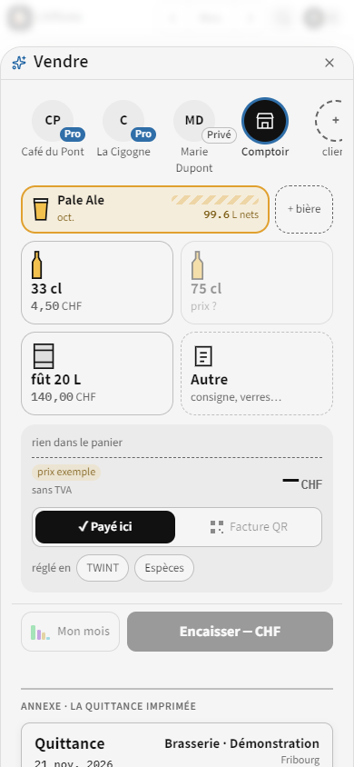
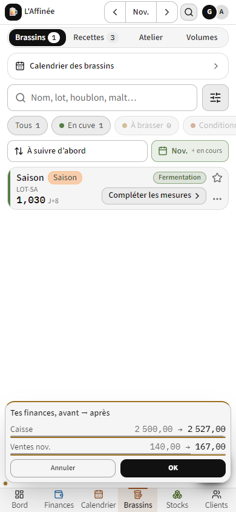
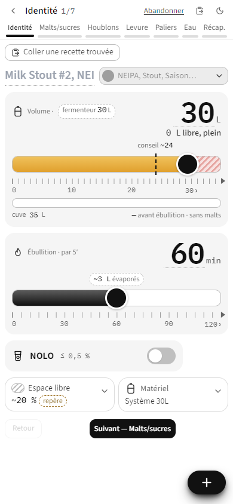
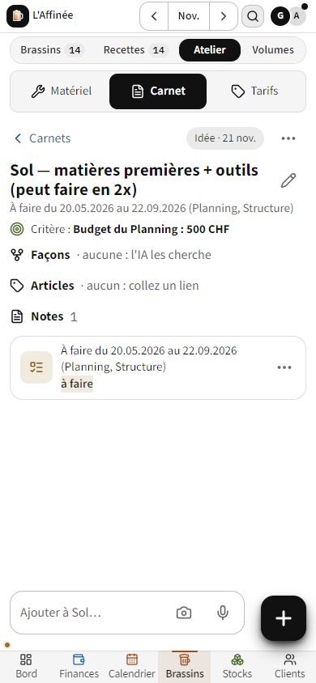

Workflows de l'app · 4 choix
21.11 · fil de fer : des gestes, pas un dessin d'écran
Réglé sans ton choix : 11 bugs, 5 propositions
- Bugs : recette neuve vers brassin, feuille Brasser, Calendrier qui ne s'ouvre pas, récap vert puis refus.
- Bugs : la vente solde la commande promise ; la facture solde l'achat prévu ; un fût vendu sort de la cave.
- Bugs : barre lâchée au mauvais endroit, courbe qui lit août, loupe aveugle au Calendrier, bières en vente cachées.
- Un brassin planifié pose son coût estimé et ses courses.
- Une seule caisse : le point le plus bas à venir, partout le même.
- Ce que l'app sait ne se retape pas : α du lot, litres et coût du brassin, styles déjà brassés.
- Un projet ou une recette datés partent au Calendrier, comme tu l'as dit.
- Mettre un lot en fûts : 8 gestes deviennent 3.
AVendre 6 bouteilles d'un geste
« Clicker pour ouvrir le clavier et taper c'est déjà beaucoup d'action... »

Gain mesuré : 10 → 5 gestes (−50 %). Aujourd'hui 7,3 s pour 6 × 33 cl ; 28 gestes pour 24.
A1Glisser la tuile
5 gestes · 24 bt : 5
- toucher +
- toucher Vente
- glisser ↑ sur 33 cl : 1, 6, 12, 24
- toucher TWINT
- toucher Encaisser
Suit le doigttotal, Mon mois, reste du brassin
A2Appui long
6 gestes · 24 bt : 6
- toucher +
- toucher Vente
- appui long 33 cl
- toucher 6 · 12 · 24
- toucher TWINT
- toucher Encaisser
Après le touchertotal, Mon mois, reste du brassin
A3Pas de 6
5 gestes (6 la 1re fois) · 24 bt : 8
- toucher +
- toucher Vente
- toucher ×6, la 1re fois seulement
- toucher 33 cl : +6
- toucher TWINT
- toucher Encaisser
Après le touchertotal, Mon mois, reste du brassin
Dans les trois : le toucher simple garde +1 ; TWINT et Espèces passent à 44 px.
BOù lire ce qu'il reste à vendre
« la vue sur le stock type épicerie, ça c'est du grand art »

Gain mesuré : impossible → 1 à 2 gestes. Aucun écran ne dit qu'il reste 114 × 33 cl (joué).
B1Carte du brassin
1 geste
- toucher Brassins
- lire Pale Ale · 114 × 33 cl · 2 fûts
- pour vendre : toucher le reste
Seulchaque vente baisse le reste
B2Rayon Bière, épicerie
2 gestes
- toucher Stocks
- toucher Bière
- lire rayons bouteilles et fûts pleins
- pour vendre : toucher la bière
Seulle rayon se vide à la vente ; un fût livré le quitte
B3Caisse seulement
2 gestes · rien de neuf
- toucher +
- toucher Vente
- lire la tuile : reste 114
Seulla tuile se grise à 0
Dans les trois : le reste se calcule depuis les ventes ; une vente d'avant la caisse n'est pas comptée, et c'est dit.
CQuand « dans 3 mois » devient un jour
« juste, aujourd'hui, dans 1 mois, dans 3 mois. Ou plus... Et plus reporté à dans 6m 1 ans »

Gain mesuré : 7 → 1 geste (compté). Idée à 3 mois : un carrousel qui part de janvier.
C1Au glisser
1 + 1 s'il veut
- toucher 3 mois : « vers févr. »
- glisser sur la frise : la semaine
- Brasser : le jour
SeulCalendrier, courses et coût à l'horizon
C2Quand le jour compte
1 + 1 à Brasser
- toucher 3 mois : « vers févr. »
- Brasser propose « sem. du 2 févr. »
- toucher : le jour
SeulCalendrier, courses et coût à l'horizon
C3L'app relance
1 + 1 au Bord
- toucher 3 mois : « vers févr. »
- 4 sem. avant, le Bord : « quelle semaine ? » cuve libre proposée
- toucher la semaine
Seulidem, et la cuve se réserve
Dans les trois : aujourd'hui · 1 mois · 3 mois · 6 mois · 1 an · plus tard ; reporter = 1 toucher. Pointillé : plus tard.
DD'où vient le prix d'un projet
« on peut aussi lui donner ou estimer directement un prix... En 1 bouton on a 3 action super précise »

Gain mesuré : aucun encore. La fiche n'a aucun geste (joué) ; clavier 3 à 4 gestes → 1 (estimé).
D1Ordre de grandeur
1 geste
- toucher 100 · 200 · 500 · 1 000 · 5 000
- glisser pour ajuster
Seul« estimé » dans la courbe
D2Dernier achat semblable
1 geste
- lire « Pompe 2025 : 420 »
- toucher garder
- rien de semblable : D1
Seul« estimé » dans la courbe
D3Fourchette
1 geste
- glisser 2 poignées : 300 – 600
Seulla caisse prévue compte le haut
Dans les trois : la facture réelle remplace l'estimé. L'estimation par IA est écartée : chiffre inventé et facturé.